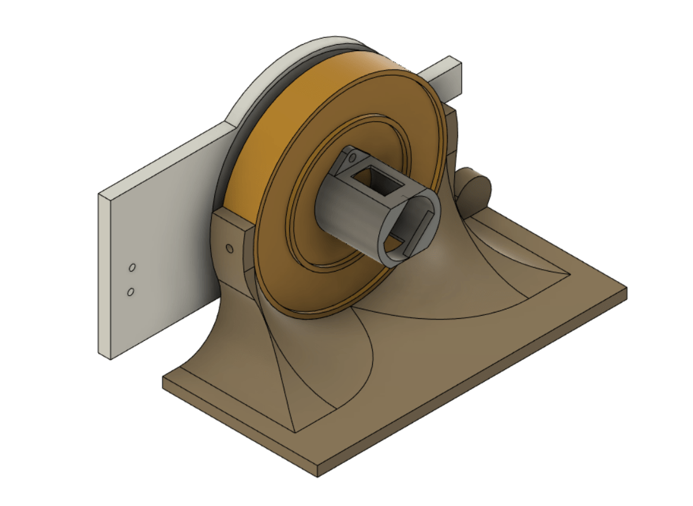

Persistence of Vision Display
30 FPS, full RGB color, and 26" diameter. Updates remotely over WIFI.
Created by: Michael Crum (mmc323@cornell.edu), Joseph Horwitz (jah569@cornell.edu), Rabail Makhdoom (rm857@cornell.edu)
Project Introduction
Our project is a persistence of vision display constructed from scratch using the Raspberry Pi Pico W microcontroller. Runs at 30 FPS with full RGB color and streams images over wifi.
Persistence of Vision refers to the eyes’ ability to see images for a brief time after they disappear. Our display exploits this phenomenon by using a quickly rotating LED strip to “paint” light onto the air. This creates the illusion of holographic images floating in mid-air. These images are ghostly, beautiful, and mesmerizing, perfect for advertising, art installations, or product presentations.
Using 40 independently addressable LEDs, we were able to create the illusion of 4800 pixels at over 30 fps. The display is 26” in diameter, and updates over wifi from our custom python client.
High-Level Design
The original idea for this project came from a video that Rabail saw of a similar POV display on Youtube.com. We approached our professor, Hunter Adams, to discuss the viability of the project, and after his confirmation, we started brainstorming ideas Initially, we thought of implementing the display on a propeller fan as we had seen on Youtube, but eventually, we chose to build the rotor and arm of the POV display ourselves for a cleaner and more lightweight project.
To display an image, we first convert a bitmap image to a polar coordinate system, where we define a theoretical “pixel” to be the image’s color at a certain radius from the center of the image at a certain angle. The resolution of the image in this system is determined by the number of LEDs we can use along its radius and how many times we can change the LEDs in one rotation.
The logical structure of our project is relatively straightforward. First, our software calculates the time duration to display each “pixel” on the display by simply measuring the period of each full rotation using a Hall Effect sensor and a magnet, then dividing by the number of rotation angles we sampled from the source image. By assigning the LEDs to a certain color for just that duration of time, we can then display the pixels and ensure proper image orientation at each rotation.
The nature of our design allows the hardware and software tradeoffs to be independent of each other. The more robust we make our software (i.e. optimized code, error-free LED mapping), the more optimized and error-free our project becomes. Similarly, by making our hardware more robust (i.e. using heat sinks, tying down wires, using bigger motors), we get a higher resolution of our system and also make the project safer.
Our project does not include any known existing patents, copyrights, or trademarks. We designed all the hardware from scratch. The software is also our original work, with some basis in the open-source example code published by Raspberry Pi.
Design Details
Software
Python Image Preprocessing
Our program had several steps. First, we developed a Python script to convert bitmap images into a custom polar coordinate data format which can be used to display images on the POV display. The image is represented as a three-dimensional array of bytes with dimensions of angle along rotation, LED number from center, and R/G/B color value. This array is generated by sampling pixels from a bitmap image at corresponding angles and radiuses from the center using NumPy array indexing. Each 0 index LED corresponds to the center pixel of the image and the outmost LED stretches to the nearest border. Any pixels outside of the circle defined by this radius are ignored.
Below are some graphs showing what the processed images look like look at varying radial resolutions.

Python TCP Server
The image data is sent to the Pico through a Transmission Control Protocol (TCP) socket using the Python socket library. To do this, the full array is divided up into packets consisting of the data for two orientations of the arm. Each packet is flattened and converted into a byte array, then sent to the Pico W. We chose to use a TCP protocol as it is reliable and accurate. It works by establishing a connection with the client via a 3-way handshake process. We then send packets to the client over TCP and each packet is acknowledged before the next one is sent. Below is the TCP server function given a preprocessed image array.
def send_arr(rot_arr, debug=False):
# Open socket to the server
sock = socket.socket()
addr = ('0.0.0.0', SERVER_PORT)
sock.bind(addr)
sock.listen(1)
print('server listening on', addr)
# Wait for the client
con = None
con, addr = sock.accept()
print('client connected from', addr)
total_bytes = 0
# repeat test for a number of iterations
for i in range(PACKET_NUM):
# Take RPB rotations from image
curr_data = rot_arr[RPB*i : RPB*i+RPB][:][:]
write_buf = bytearray(curr_data.flatten())
if debug:
print(len(curr_data.flatten()))
print(len(write_buf))
prstr = ""
for i, b in enumerate(write_buf):
if i % 3 == 0: prstr += 'r: ' + str(int(b)) + ' '
if i % 3 == 1: prstr += 'g: ' + str(int(b)) + ' '
if i % 3 == 2: prstr += 'b: ' + str(int(b)) + '\n'
print(prstr)
# write BUF_SIZE bytes to the client
write_len = con.send(write_buf)
print('Wrote %d bytes to client' % write_len)
total_bytes += write_len
# Check size of data written
if write_len != BUF_SIZE:
raise RuntimeError('wrong amount of data written')
# All done
con.close()
sock.close()
print(f"In total wrote {total_bytes} bytes")
print("send completed")
APA102 LEDs
The APA102 LEDs use a two-wire SPI protocol to communicate with the PI Pico. This allows us to use RP2040’s SPI peripheral, which made writing the driver easy. The LEDs expect packets that are broken into “frames” of 32 bits. Each message begins with a start frame of 32 0’s, and ends with an end frame of 32 1’s. In between, each frame represents the data for a single LED in the strip. A LED frame starts with 111, then is followed by five bits representing the brightness of the LED. This is followed by 8 bits for each of blue, green, and red, giving 256 values for each.
Below is our code for constructing the packets based on a three-dimensional array representing the color of each LED on the strip.
void apa102_write_strip(uint8_t (*color_data)[3], uint16_t num_leds)
{
uint8_t spi_buffer[num_leds * 4 + 8];
// Start frame
spi_buffer[0] = 0x00;
spi_buffer[1] = 0x00;
spi_buffer[2] = 0x00;
spi_buffer[3] = 0x00;
// LED frames
for (int i = 0; i < num_leds; i++)
{
if (i < 5) // Inner most LEDs move slower, so appear brighter. Lower their brightness
{
spi_buffer[i * 4 + 4] = 0b11100001; // Not full brightness so I don't kill my retinas
}
else
{
spi_buffer[i * 4 + 4] = 0b11100011; // Not full brightness so I don't kill my retinas
}
// APA102's we have are RBG instead of RGB,so flip the BG inputs here.
spi_buffer[i * 4 + 5] = color_data[i][0];
spi_buffer[i * 4 + 6] = color_data[i][2];
spi_buffer[i * 4 + 7] = color_data[i][1];
}
// End frame
spi_buffer[num_leds * 4 + 4] = 0xFF;
spi_buffer[num_leds * 4 + 5] = 0xFF;
spi_buffer[num_leds * 4 + 6] = 0xFF;
spi_buffer[num_leds * 4 + 7] = 0xFF;
spi_write_blocking(SPI_PORT, spi_buffer, num_leds * 4 + 8);
}
The LEDs are wired in series, with the SCK and MOSI lines of the previous LED leading into the next. When an LED receives a packet, it updates its state, strips the first LED frame off the packet, and then shifts the new packet out of its output SCK and MOSI lines. By doing so the entire strip can be updated from a single message sent to the first LED in the strip.
Hall Effect Sensor
The hall effect sensor we chose is active low, meaning it pulls a GPIO pin to ground whenever the south pole of a magnet gets close to it. We set up a falling edge interrupt on the pin, triggering whenever the sensor moves past the stationary magnet on the motor mount. Below is the code inside of the interrupt:
detect_time = time_us_32();
if (detect_time - old_time > 10000)
{
time_period = detect_time - old_time;
old_time = detect_time;
curr_rot = 0;
}
When the interrupt is triggered, the period of rotation is calculated by subtracting the last activation from the current time. We also check that the period is a reasonable value (> 10000 us), which helps us reject any high-frequency false positives. Finally, we indicate that we have hit our zero point by setting the relevant variable. This stops the display from becoming misaligned relative to the external reference frame.
Pico TCP Client
Then, we established a TCP exchange to transfer the processed image data to the microcontroller which operates the display. We based this code on the open-source TCP examples provided by Raspberry Pi for the Pico W. Wifi was our chosen communication method because it allowed us to update the image while the microcontroller was rotating, which would be impossible with a wired setup. On the microcontroller’s side, we had one thread poll for incoming data and handle processing that data, while another thread maintained the display. The data came through as a stream of bytes but had to be formed into a three-dimensional array of color data: angle of rotation * LED number (0 at center) * RGB triple. This structure made displaying the image a simple continuous loop through the array, where all the LEDs are simultaneously updated at a period matching the frequency of the blade’s rotation.
This is our code for converting bytes from TCP into LED colors and rotation values.
static int dump_bytes(const uint8_t *bptr, uint32_t len, int curr_rot)
{
// unsigned int start_i = curr_rot * ROTATIONS * LED_NUM * 3;
static unsigned int arr_i = 0;
unsigned int led_i;
unsigned int rot_i;
unsigned char rgb_i;
uint8_t x;
// printf("dump_bytes %d\n", len);
for (unsigned int i = 0; i < len; i++)
{
x = bptr[i];
// arr_i = start_i + i;
rgb_i = arr_i % 3;
led_i = (arr_i / 3) % LED_NUM;
rot_i = (arr_i / (LED_NUM * 3)) % ROTATIONS;
led_array[rot_i][led_i][rgb_i] = x;
arr_i++;
// printf("Should be: %d, Got: %d | ", x, led_array[rot_i][led_i][rgb_i]);
// printf("rot: %d, led: %d, rgb: %d\n", rot_i, led_i, rgb_i);
}
// printf("\n");
return rot_i + 1;
}
Pico Entry Point
The main Pico code uses all of the micro-controller code above to create the final product.
In the core 0 main function, we begin by initializing the relevant GPIO, setting up the pin change interrupt for the hall effect sensor, and overclocking the RP2040 to 250 MHz. We also call the initialization functions for our APA102 driver and write a simple pattern to the strip to indicate that the system has powered on. Next, we initialize the TCP client and use it to connect to wifi. Finally, we start a protothread to handle TCP communication and start core 1.
Core 1 main is fairly simple, as we just start a protothread for writing the current image to the LEDs.
By using both cores of the RP2040, we can concurrently receive TCP messages and control the LED strip, allowing for seamless operation.
The TCP thread is simple and is shown below. We simply check for new messages, and if they have arrived we update the LED array. The inner workings of run_tcp_client_test() are detailed above.
PT_BEGIN(pt);
while (1)
{
if (run_tcp_client_test() == -1)
{
printf("FAILED\n");
PT_YIELD_usec(100000);
}
printf("TCP ");
PT_YIELD_usec(1000000);
}
PT_END(pt);
In our LED timing thread, we cut a full rotation into slices based on the estimated period from the hall effect sensor. We can then use PT_YIELD_usec to wait until the LEDs need to be written again, and do so.
// Mark beginning of thread
PT_BEGIN(pt);
volatile static int begin_time;
volatile static int spare_time;
while (1)
{
// Measure time at start of thread
begin_time = time_us_32();
apa102_write_strip(led_array[curr_rot % ROTATIONS], LED_NUM);
curr_rot++;
unsigned int theta_time = time_period / ROTATIONS;
spare_time = theta_time - (time_us_32() - begin_time);
PT_YIELD_usec(spare_time);
}
PT_END(pt);
Electrical
Our PCBs laid out in KiCad
In a system experiencing high accelerations, Printed Circuit Boards (PCB’s) are king. Made from high-strength PTFE substrate, these boards can stand many thousands of G’s, and soldered connections are extremely resilient to the characteristic forces of a POV display. They are also lightweight and slightly flexible, making them perfect for our use case. We decided to create two PCB’s for our design.
The first is what we call the “Arm”. The arm holds 40 surface-mounted APA102 LED’s and provides standard 0.1 inch headers for interfacing with the LEDs. We added a M3-sided hole on each end of the arm, which allowed us to mount the PCB and screw on nuts, and balance the weight of the rotor. The APA102 LEDs were chosen because they use a two-wire SPI protocol to communicate with the control board. This allows communication rates of up to 20 MHz, more than fast enough for our application. We previously experimented with the popular WS2812B LEDs, but these LEDs capped at around 1 KHz refresh rate. This would limit the radial resolution of our display.
 The arm PCB assembled and lit up
The arm PCB assembled and lit up
The second PCB is the control board. The control board holds the Pico W and the power / logic electronics to facilitate communication with the LEDs and hall effect sensor. The Pico W uses 3.3v logic levels, which can cause trouble with the APA102 LEDs, which expect 5v logic. To remedy this we included a 74AHCT125 Logic Level shifter. This shifter converts our 3.3v signal to 5v, and is fast enough to deal with our high-speed (20 MHz) SPI signals. To power the control board we use a screw terminal to accept power. A 47 uF decoupling capacitor is placed across the power supply, which is especially important when dealing with the rapidly changing power requirements of the LEDs. We also added a Schottky diode before routing the power into the Pico’s VSYS pin. This diode allows the board to take power from other screw terminals and the Pico’s onboard USB without connecting 5v rails (which would damage both the Pico and the power supply). To allow for ease of programming we connected a push button between RUN and ground, allowing for the double tap into boot select capability of the Pico to be reached. Finally, we wired the hall effect sensor to pin 21 of the Pico with a 10k pull-up resistor. The sensor is active low.
The assembled control board PCB
The control board’s schematic
All PCB’s were designed using KiCad, an open-source ECAD software. Project files are included in our GitHub Repo, linked in Appendix B.
One of the key design choices of a POV display is how to power the rotor. Because of its rapid motion, wires would get tangled if ran between the mount and the rotor. This leaves three options: a slip ring, an onboard battery, and an inductive power supply. Slip rings are notoriously unreliable, cause sparks under high load, wear over time, and add friction. An onboard battery adds weight to the rotor and is a safety concern (imagine an overheating LiPo traveling at 120 miles per hour, not so fun). We decided to use an inductive power supply as it has minimal effect on the mechanical design of the system, allows for wireless and frictionless power transmission, and is by far the “slickest” solution, if that matters (it does).
Due to the adoption of wireless charging technology in mobile phones, high-efficiency and inductive coils are readily available on amazon. We picked up a 25$ system that is capable of transmitting 2A of current at 5v across up to 80 mm, more than enough for our application.
 One of the inductive coils mounted on the bottom of the arm
One of the inductive coils mounted on the bottom of the arm
Finally, we need to spin the rotor. We initially used cheap and small brushed DC motors. You are probably familiar with these motors, they are the small gray ones that come with about every hobby electronics kit ever made. Because we took care to balance our rotor and minimize its weight, we predicted that the motor would have a very low load. We thought this meant we could get away with a wimpy motor without issues. We were unfortunately wrong, for reasons that aren’t entirely clear. Our motors would overheat and burn up, drawing only about 2A of current. We theorize that this was caused either by air resistance generating a much higher load than we predicted or by an interaction with the inductive power supply. The motor was positioned directly in the center of the inductive coil and may have induced current in the motor coils that decreased performance.
We were able to locate a much stronger motor in the lab, which ended up being better for the application. At only 6v it reached 1800 RPM, which equates to 30 fps in POV terms (our target speed). This motor is powered by a motor speed controller built from a second PI Pico and a two-channel HBridge. We tied the channels of the HBridge together to increase the max current from 1.5 A to 3 A, which worked great for our application. The speed of the controller is determined by the position of a potentiometer, allowing us to tune the display and test which speeds looked the best to the eye.
Mechanical
We started the design process by working on the rotor. As mentioned in the previous section, the PCBs themselves were included in the mechanical construction of the rotor. To supplement the PCBs, we needed to create a superstructure that holds the PCBs together and connects them to the motor shaft. Additionally, we needed a mount for the inductive coil. Along with the functional requirements, we want to keep weight to a minimum and make the design modular so that design iterations are faster.
Final rotor design in CAD
The rotor fully assembled
Our design is 3D printed with minimal infill to reduce weight. It is only a couple of millimeters thick and is designed to use the PCBs to supplement its strength. Components are connected using M3 screws that are threaded directly into the PLA. With proper print settings, these connections are remarkably strong, and more than strong enough for the mostly lateral load in this application.
The rotor is connected to an adaptor that fits the motor shaft on one end and has a standard hole pattern on the other side. By making the adaptor a separate component, the entire rotor doesn’t have to be reprinted when we change the motor. The adaptor includes a hole for a set screw, but the press fit ended up being sufficient. By adding a bolt and nuts to the hole at the end of the arm PCB, the rotor can be balanced. This reduces the load on the motor and mitigates vibrations.
The next step was creating a housing for the motor. The housing must include a way to secure the inductive coil at a proper distance from the rotor, secure the motor and minimize vibrations, and make it easy to attach the system to a table for testing.
 Final motor mount design in CAD
Final motor mount design in CAD
After many tests and iterations, we landed on the motor mount design above. The motor and inductive coil are mounted together using the circular middle section. The cut-out supports the motor and prevents it from rotating. The inductive coil is mounted in the indent, and the 13 mm of the plastic facing the rotor guarantees the minimum coil spacing is respected. The circular section then fits into the table mount and is secured using two M3 screws. The current table mount provides a flat area for clamping to the table, but the entire amount could be redesigned for a wall or floor mount. Again, the two parts are modular to reduce redesign time. All parts are printed in PLA with 20% infill, which was plenty strong enough for the application. PLA is not ferromagnetic, which means that it does not interfere with the inductive power supply.
The full system mid-swing
Aside: Motor mistakes
One of our early designs used a series of belts to increase the speed of a 300-rpm motor up to 1800. This design repeatedly failed due to the 3D printed shafts shearing, so we ended up looking for a faster motor instead.
Failed belted gearbox design
We initially tried using a much smaller motor but scrapped it due to overheating. This design used a significantly different motor mount, which screwed into the back of the inductive coil mount.
 Old motor mount
Results of the Design
We can quantify the performance of our display in terms of several metrics:
-
Resolution
Rotational displays operate slightly differently than traditional grid-based displays. Each “pixel” is actually an arc, and its position is defined in terms of radius and angle rather than x and y. For a POV display, the resolution on the radius is the number of LEDs on the arm or 40 in our case. The angular resolution depends on how many times the LEDs update per rotation. We experimented and determined that 120 updates produced vivid images, so we settled on that number.
Using the calculated numbers, we see that our display effectively has 4800. This is very high when compared to similar projects, and produces visually stunning images.
-
Size
POV displays become exponentially more complicated as they grow larger. A large radius results in higher acceleration, more LEDs required for equivalent pixel density, and more power required. This leads to many POV projects being around 6” or smaller. Because our goal was to create a visually impressive product, we wanted to go bigger. We decided to aim for around the size of a large poster, and ended with a 26” diameter display. This posed many technical challenges, but the result is absolutely stunning.
-
Image Stability
Due to the high speed of the system and the noisy signals generated by the hall effect sensor, it can be difficult to determine the exact rotational frequency. This can lead to a jitter in the image, or cause it to process around the display.
Our display dealt with these issues remarkably, with almost no visible jitter. Any noise was constrained to within one angular pixel, or under three degrees.
-
Usability
Our design emphasizes usability and consistency. Good build quality ensures that repeated use doesn’t cause incremental damage, giving the system a good life span. The system is powered by a single wall outlet, so no specialized hardware is required whatsoever. It is resilient to fluctuations in motor speed, so replacement or modification is easy. The custom python interface allows for use of the display with any image you choose, and updates can be sent over wifi so the display never has to be slowed down.
The entire project is open source, and files for the hardware, PCBs, and code are freely available on GitHub. If someone wants to recreate the project, the cost altogether is < 100$ and the process is well documented through this report.
Safety
Given the speeds that our display rotates at, safety was a major concern. A 13-inch arm rotating 30 times a second has a tip speed of well over 100 mph, and a component flying off could injure someone. Ultimately, any project of this variety comes with some degree of risk. It is our job as engineers to ensure the risk is within an acceptable range. We achieved this through careful design and testing.
To lower risk, we complied with all known good practices for designing high-acceleration devices. By ensuring that all connections and components were able to resist much greater forces than our system generated, we brought the chance of malfunction close to zero. In case we failed to consider some variables, we conducted many test spin-ups using safety glasses and in areas where no students were in the line of fire. Only once we had confirmed that the system was robust did we begin testing without safety glasses. We continued to check the system for loose components before activating the motor and never ran the motor when the system was damaged.
Conclusions
Our goal was to create a visually stunning display that could produce holographic images and animations. We believe our final result achieved these goals with flying colors.
Although we consider the system a huge success, there are a couple of areas that we think we could improve.
The first is video playback. We had a stretch goal of enabling full video playback, or at least GIF playback. We achieved GIF playback at a reduced speed but would like to increase this capability substantially.
The second is the pixel density. Although our display has a higher pixel density than most comparable projects, there are noticeable gaps between the pixels. This could be remedied by using two staggered rows of LEDs, with a slight radial overlap.
Special Thanks
Special thanks to Professor Hunter Adams and Professor Bruce Land for making this class something to remember.
Thanks to the TAs for endless help.
Hunter (Left) and Bruce (Right) displayed the POV display
Appendices
Appendix A: Permissions
The group approves this report for inclusion on the course website.
The group approves the video for inclusion on the course youtube channel.
Appendix B: Source Code
See a full source code listing at our GitHub Repo.
Appendix C: Bill of Materials
Misc. components:
1x Arm PCB (see github repo)
1x Control PCB (see github repo)
3D printed components (see github repo)
1x 3A Diode
1x 47 uF Capacitor
1x 10 kOhm Capacitor
Various 0.1” headers / jumpers
1x Motor (Ours was salvaged, look for something in the range of 1800 rpm @ 18 W)
Assortment of M3 bolts and nuts
Small magnets
Appendix D: External Links and References
Technical Documentation: